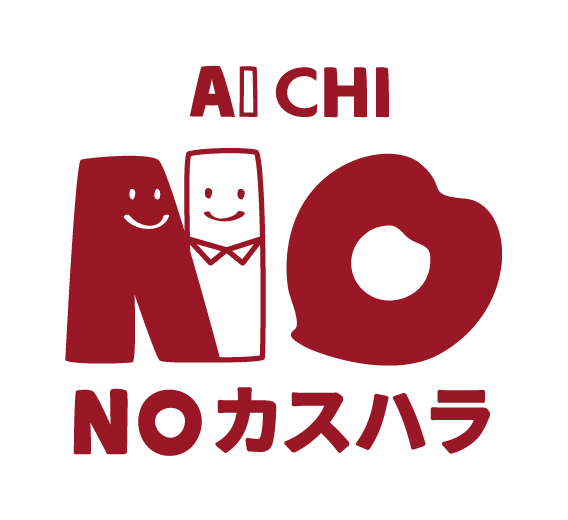

【カスタマーハラスメントに対する基本方針を制定しました】
平素よりこども訪問看護ステーションJunoをご利用いただき、誠にありがとうございます。
このたび当ステーションでは、「カスタマーハラスメントに対する基本方針」を制定いたしました。
【制定の趣旨】
「こうしてほしい」「ここが気になる」といったご意見やご相談は、支援をより良くするための大切な声です。これまでどおり、どうぞ遠慮なくお聞かせください。
そのうえで、看護師が心身ともに健やかな状態で伺えることは、お子さまへの安定した支援を続けるための土台でもあります。2026年10月1日から、すべての事業所にカスタマーハラスメント防止の取り組みが求められることを受け、国の法律や愛知県の条例の考え方に沿って、方針を定めました。
なお、発達の特性や気持ちの揺れにともなう、お子さまご本人のかんしゃくやパニックなどの行動は、カスタマーハラスメントにはあたりません。私たちがご家族と一緒に向き合っていく「支援の対象」ですので、どうぞ安心してご相談ください。
【方針でお伝えしていること】
- カスタマーハラスメントの考え方と、お控えいただきたい行為の例
- 訪問時間（原則30分）についてのお願い
- お子さまご本人の行動についての考え方
- ご意見・ご相談の窓口
制定日：2026年9月29日
カスタマーハラスメントに対する基本方針を見る

Junoは、愛知県カスタマーハラスメント防止条例の趣旨に賛同し、カスハラのない、誰もが安心して過ごせる地域づくりに取り組んでいます。
こども訪問看護ステーションJuno
お問い合わせ先：電話番号 052-627-3959 ／ メールアドレス hello@junochild.com
お問い合わせ先：電話番号 052-627-3959 ／ メールアドレス hello@junochild.com